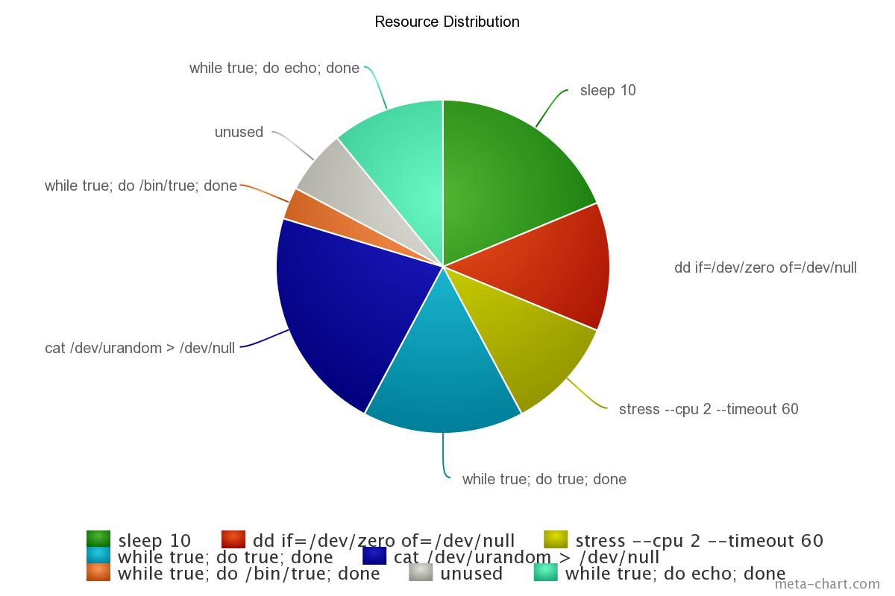

Mesos & DCOS:
Plumbing & Scheduling with Sugar on Top
Alexander Rukletsov
alex@mesosphere.com
Apache Mesos is a distributed system for building and running other distributed systems
© lavka-podarkov.ru
Mesos lets us treat a cluster of nodes...

... as one big computer

|
Not as individual machines |
Not as VMs |
But as computational resources like cores, memory, disks, etc.
Ridiculous?

Mesos is...
| A top-level Apache project | |
| A cluster resource negotiator | |
| Scalable to 10,000s of nodes | |
| Supported and developed by Mesosphere, Twitter and other companies | |
| Fault-tolerant, battle-tested | |
| An SDK for distributed apps |
Mesos: Dichotomy

Plumbing |

Scheduling |
MesosPlumbingWhat?
© CERN

Containerization in Mesos, a brief history
To infinity... and beyond!
| SSL | |
| Task hooks | |
| IP per container | |
| Network isolation | |
| Maintenance primitives | |
| Authentication and autherization | |
| New containerization primitives |
Docker Support
- Docker executor
- Docker Swarm on Mesos: MesosCon Seattle 2015 talk by Victor Vieux (Docker) and Tim Chen (Mesosphere)
- Native AppC and rkt support (WIP)
- Unified containerizer: MesosCon EU 2015 talk by Yan Xu (Twitter)
Where is the sugar?
© belladivalifestyle.com
DCOS: Integrating Services
dcos package install swarm
dcos package install cassandra
DCOS: Embedded Support
DCOS: Informative Sexy UI
DCOS: Setup and Cluster Bootstrap
- AWS CloudFormation Template: Try it out, it's free!
- Operational Expertise: "Delegate issue" on CentOS 7 + SystemD + Docker
- Numerous service discovery solutions
- Security enhancements
Scheduling and Distributing Resources
DRF: Dominant Resource Fairness
Based on the research in Berkeley: NSDI '11 paper
But what is fair?
To infinity... and beyond!
- Allocator modules: write your own
- Persistent primitives & dynamic reservations: MesosCon Seattle 2015 talk by Jie Yu (Twitter) and Michael Park (Mesosphere)
- Oversubscription: turbocharge your cluster
- Quota (WIP): design & overview
- Optimistic offers, inverse offers (WIP)
Where is the sugar?
© belladivalifestyle.com
DCOS: Squeezing cycles out your cluster
- Smart oversubscription modules based on gathered statistics
- Anomaly detection (WIP)
DCOS
vs.
Apache Mesos
https://github.com/apache/mesos
https://github.com/apache/aurora
© jochemwartena.nl
https://open.mesosphere.com/reference/packages
© unepesa
https://mesosphere.com/product
© billydsgn.com
https://github.com/apache/mesos
https://github.com/mesosphere/marathon
https://github.com/mesos/chronos
https://github.com/twosigma/Cook
https://github.com/mesosphere/mesos-dns
© reddit.com
https://mesosphere.com/product
© talkaudio.co.uk
Containerization and isolation
- Static application composition
- Reliable deployment
- Unit of resource isolation
- Execution isolation
- Multi-tenancy without heavyweight VMs
Docker
- Open source
- Configurable layers
- Reproducible
- Version-controlled
- Plenty of other people's containers
- First-class citizen in Mesos and the Mesosphere stack
- Kubernetes employs and promotes Docker
- Security (isolator that does not isolate)
- Big images, long fetch time
- Vendor lock
- Persistent volumes
Run everything in containers
© Gerard Julien/AFP
© Unknown
© Unknown
Manage containers with Mesos
© ect.nl
Mesos on Mesosphere

Mesos on Mesosphere

The Mesosphere stack

The DCOS stack

DCOS: Contributions to Mesos
- Module subsystem (lifecycle, python)
- Modules (authenticator, allocator, isolator)
- Offer reservation
- Security and ACL improvements
- etcd alternative
DCOS: Mesosphere open source efforts
- Mesosphere package repo [github://mesosphere/universe]
- HDFS on Mesos [github://mesosphere/hdfs]
- Cassandra on Mesos [github://mesosphere/cassandra-mesos]
- K8s on Mesos [github://mesosphere/kubernetes-mesos]
- DNS service discovery [github://mesosphere/mesos-dns]
- ... and counting
Stateful frameworks
Demo time!
DCOS dashboard

DCOS CLI
dcos package install hdfs
Thanks!
Useful links
|
This presentation: mesosphere.github.com/presentations/apachecon-2015/containers |
|
|
Read about Marathon: github.com/mesosphere/marathon |
|
|
Try out Mesosphere on GCE: google.mesosphere.io |
|
|
Come work with us: mesosphere.io/jobs |